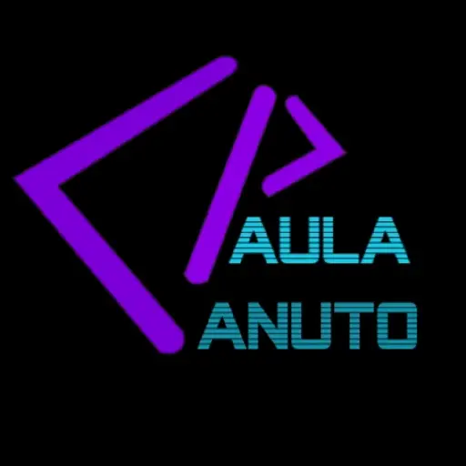

Sobre Mim
Olá! Sou Paula Canuto, estudante do 3º ano de Engenharia de Sistemas Informáticos (IPCA), apaixonada por tecnologia e dados. Atualmente, foco meus estudos em Análise de Dados, BI e processos ETL, explorando ferramentas como Pentaho, Power BI, PostgreSQL e Python. Acredito que dados bem trabalhados geram conhecimento e impulsionam decisões inteligentes e estou em constante aprendizado para fazer parte dessa transformação digital. Estou à procura de uma oportunidade onde possa aplicar e expandir os meus conhecimentos e contribuir com novos projetos.
Competências
- Sistemas de Gestão de Bases de Dados (SGBD)
- Figma
- HTML, CSS, JavaScript
- Linguagens de programação: C, C++, C#
- Windows Forms
- Illustrator, Photoshop, After Effects
- Git e GitHub
- Linux Onboarding
- Redes
Contacto
Estou disponível para oportunidades de estágio. Sinta-se à vontade para entrar em contacto através do email anapcsilvapt@gmail.com ou visitar os meus perfis:
Logo Animada
Exemplo fictício criado com Illustrator e After Effects
Apresentação em Vídeo
Em breve!